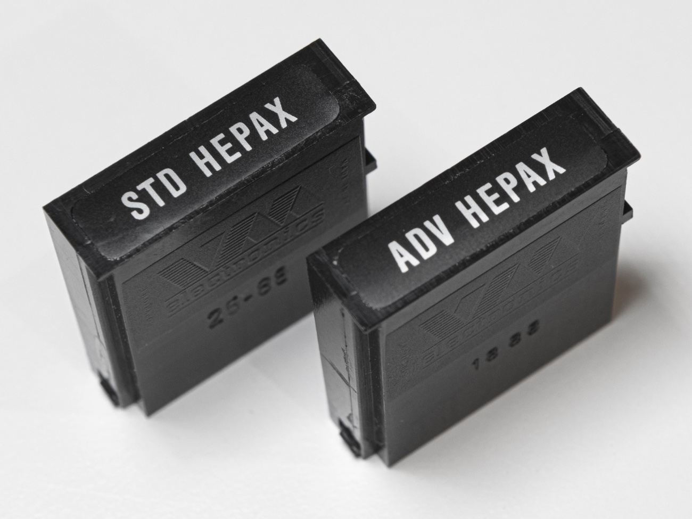

Manual Vol I, Vol II from HP Calculator Literature
 The HEPAX module – HEwlett-PAckard 41 eXpansion module – is a very powerful expansion of your HP-41 system. In effect, it lets you create your own application modules, you can use data and text files exactly like in the Extended Functions module, you get all the functions of the XF module and you can save key assignments and entire calculator memory exactly like with the HP-IL module and a mass storage device.
File System Functions
| HAPPCHR | Appends the characters in the ALPHA register at the end of the record at the pointer in the current HEPAX text file. |
|---|---|
| HAPPREC | Appends the contents of the ALPHA register as a new record at the end of the current HEPAX text file. |
| HARCLRC | Appends the record at the pointer in the current HEPAX text file to the ALPHA register. |
| HASROOM | Returns the number of characters left in a HEPAX text file. |
| HCLFL | Clears the contents of a HEPAX data or text file. The file is not deleted. |
| XXX | Appends the record at the pointer in the current HEPAX text file to the ALPHA register. |
| HCRFLAS | Creates a HEPAX text file. |
| HCRFLD | Creates a HEPAX data file. |
| HDELCHR | Deletes a number of characters from the current HEPAX text file, starting at the pointer. |
| HDELREC | Deletes the record at the pointer from the current HEPAX text file. |
| HEPDIR | Lists all files in the HEPAX file system. |
| HEPDIRX | Lists one files in the HEPAX file system. |
| HEPROOM | Returns the number of registers available in the HEPAX file system. |
| HFLSIZE | Returns the size of a HEPAX file. |
| HGETA | Recalls the contents of entire calculator main memory from a HEPAX "write-all" file. |
The Extended Functions Multi-function
To execute an Extended Functions Multi-function, execute the XF function and enter the multi-function number or execute the XFA function and press ALPHA, enter the multi-function name and press ALPHA.
| Name | Number | Function |
|---|---|---|
| ALENG | 000 | Returns the length of the string in ALPHA. |
| ANUM | 001 | Converts the string in ALPHA to a numerical value in X. |
| AROT | 002 | Rotates contents of ALPHA. |
| ATOX | 003 | Converts a character in ALPHA to a character code in X. |
| CLKEYS | 004 | Clears all key assignments. |
| CLRGX | 005 | Clears registers as specified by X. |
| GETKEY | 006 | Gets keycode depending on key pressed. |
| GETKEYX | 007 | Gets keycode within time specified by X. |
| PASN | 008 | Programmable assignment. |
| PCLPS | 009 | Programmable clear programs. |
| POSA | 010 | Finds position of string or character in ALPHA. |
| PSIZE | 011 | Programmable SIZE. |
| RCLFLAG | 012 | Recalls the status of user flags 00-43. |
| REGMOVE | 013 | Moves a block of main memory data registers. |
| REGSWAP | 014 | Swaps two blocks of main memory data registers. |
| ΣREG? | 015 | Returns the location of the statistical registers. |
| SIZE? | 016 | Returns the current SIZE. |
| STOFLAG | 017 | Restores the status of user flags 00-43. |
| X<>F | 018 | Exchanges the status of user flags 0-7 with the X register. |
| XTOA | 019 | Converts character code in the X register to a character in the ALPHA register. |
| X=NN? | 020 | Compares X with indirect Y. |
| X≠NN? | 021 | Compares X with indirect Y. |
| X<NN? | 022 | Compares X with indirect Y. |
| X≤NN? | 023 | Compares X with indirect Y. |
| X>NN? | 024 | Compares X with indirect Y. |
| X≥NN? | 025 | Compares X with indirect Y. |
HEPAX Advanced Functions
| CLRAM | Clears a whole or part of a 4K block of HEPAX memory. |
|---|---|
| CODE | Codes the hexadecimal string in the ALPHA register and places result in the X register. |
| COPYROM | Copies a whole or part of a 4K block of system memory to HEPAX RAM. |
| DECODE | Decodes the contents of the X register and places result in the ALPHA register. |
| DECODYX | Decodes a number of nybbles as DECODE. |
| DISASM | Disassembles HP-41 M-Code. |
| "DISSST" | FOCAL program that disassembles HP-41 M-code line by line. Program listing on page 67 in the Owner's Manual. |
| HEXEDIT | Edits HEPAX memory word by word. |
| HPROMPT | Prompts for a number of hexadecimal digits. |
| "JUMP" | FOCAL program that calculates HP-41 M-Code absolute jump instructions. Program listing on page 127 in the Owner's Manual. |
| RAMTOG | Toggles write protection status of a ROM image. |
| READROM | Reads a number of ROM images from Mass Storage. |
| WRTROM | Writes a number of ROM images to Mass Storage. |
The HEPAX Multi-function
To execute a HEPAX multi-function, execute the HEPAX function and enter the multi-function number or execute the HEPAXA function and press ALPHA, enter the multi-function name and press ALPHA.
| Name | Number | Function |
|---|---|---|
| AND | 001 | Logical X AND Y. |
| BCAT | 002 | Block catalog. |
| BCD-BIN | 003 | Converts number in X from BCD to binary. |
| BIN-BCD | 004 | Converts number in X from binary to BCD. |
| CTRAST | 005 | Sets display contrast ("Halfnut" calculators only). |
| DELETE | 006 | Works like DELETE of the hexadecimal editor. |
| INSERT | 007 | Works like INSERT of the hexadecimal editor. |
| NOT | 008 | Complement of X. |
| OR | 009 | Logical X OR Y. |
| ROTYX | 010 | Rotates Y register X nybbles. |
| SHIFTYX | 011 | Shifts Y register X bits. |
| XOR | 012 | Logical X exclusive-or Y. |
| X+Y | 013 | Bitwise addition. |
| X-$ | 014 | Converts X register to alpha string. |
| Y-X | 015 | Bitwise subtraction. |